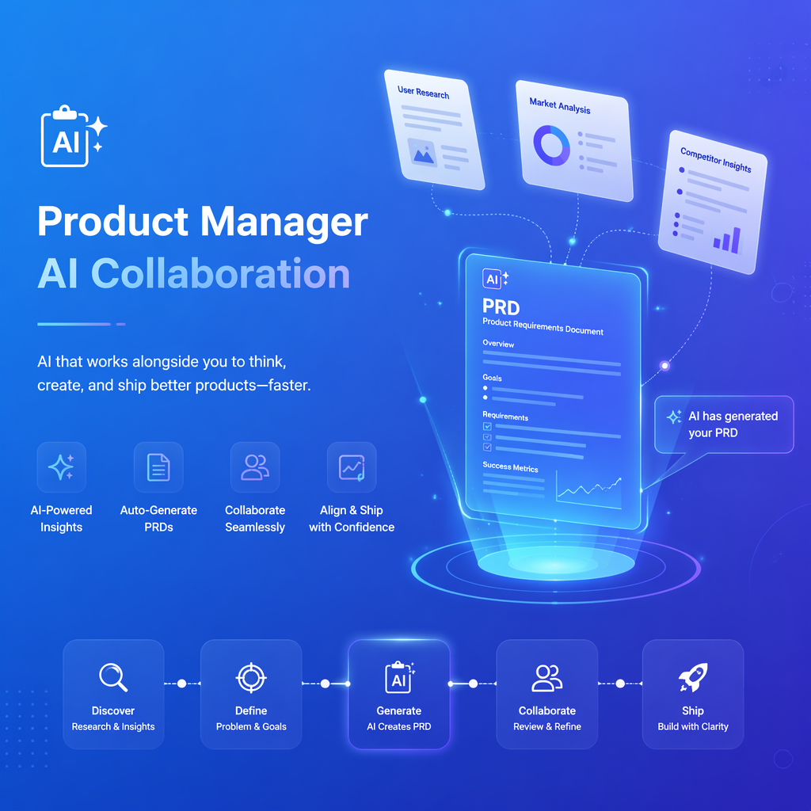

大部分产品经理的时间花在"写"上——写PRD、写评审文档、写竞品报告、写周报。AI可以把这些时间压缩到原来的1/10，让产品经理回归"思考"本身。
传统的PRD撰写需要2-3天，涉及需求梳理、逻辑结构、交互说明、接口定义等多个环节。AI辅助可以在30分钟内完成初稿，产品经理只需要微调和确认。
输入需求描述，AI自动生成完整PRD文档，包括背景分析、功能需求、交互设计、数据埋点方案。完成率95%+。
AI自动审查PRD完整性、逻辑一致性、接口规范性，输出评审意见和改进建议。
输入竞品名称或链接，AI自动抓取信息、对比功能差异、生成结构化分析报告。
将数据报表导入AI，自动发现趋势、异常、相关性，输出可直接使用的分析结论。
"最近的一个PRD，AI完成率达到95%到98%了。我只是人工微调了一下。"
—— 基伟，供应链产品经理